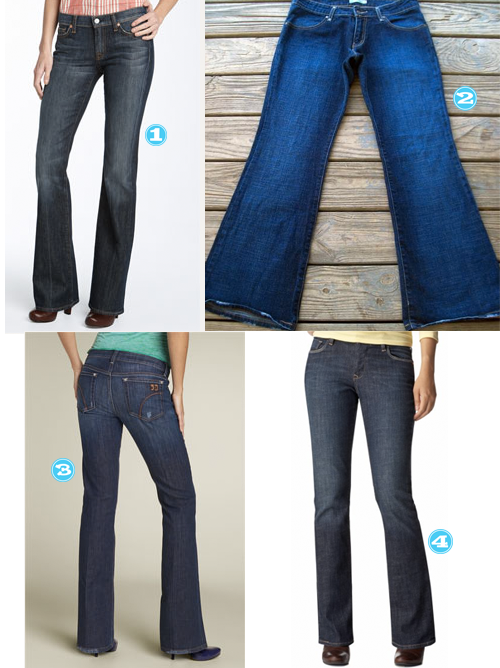

Tipsy gals are here again to weigh in on our fav jeans. Here’s our picks and our comments as to why they hug in all the right places.

- Sarah: Seven for All Mankind Bootcut Stretch Jeans: I like these jeans because they’re a) long enough to wear with boots or heels for my 5′ 11″ frame, b) curvy enough to fit my booty well, and c) expensive enough that I have to cherish the one pair I own! 🙂
- Der: Levis 537s Description Der found that she say is perfect: The Levi’s 537 Flare Jean is a classic Levi’s style. The soft heavy feel of the denim and five pocket styling are the perfect combination. The 537 is built to withstand all of the wear and tear that you can dish. Der’s description 🙂 : I feel like they hug all the right places and look great dressed up or down. BUT, I have the HARDEST time locating them. I had to buy my last pair off ebay because I couldn’t find ANY stores that sell them. BIG BUMMER. In fact, the only pic I could find is on ebay so if your a lucky size 8…snatch these UP!
- AK: Joes Jean’s are my fav “going out” jeans somehow these jeans make my butt and thighs look a little smaller than they really are. Maybe its the pocket placement or the seam placement but they are definitely worth the price to make things in the mirror smaller than they appear. Levi 515s are my fav “knock around” jeans. I’ve had a pair of these for a good 10-12 years and they are my go-to slouch-o-rama, weekend jeans. They’re like butta.
- Court: Old Navy Sweetheart These jeans hold up in harsh washing conditions, keep their color and don’t loose their boot cut leg which helps to balance out my curvy figure.
Ladies all shapes, sizes, and budgets–let us know what your favs are.


Oh Joe’s Jeans…so great! JCrew’s Matchstick are a “skinny” option that aren’t horrifyingly spray-painted on. As a devoted wearer of the bootcut style, I wasn’t so sure about them at first, but now I wear them with sandals, flats or tucked into boots. Luckily they have held their shape and color!
@Christen a joe’s fan! Maybe I need to check into these matchstick jeans…I was pretty sure these hips were not eligible for skinny…but I definitely want to try them on!
@ ak: Give them a whirl and report back! The ankles aren’t too tapered, so that sold me. Less 1987 as far as I was concerned. 🙂
@Christen I’ll def report back! I think I was wearing Guess Jeans in 1987 and maybe just maybe folding them over and up at the bottom. But I’ll probably never admit that.
I looooove the Gap Long & Lean jeans. Contrary to what the name may lead you to believe, they have legs wide enough to accommodate a thigh and make me look like I lost weight. And they don’t come pre-ripped or faded unless you want them to.
Here’s a post I wrote about them when I had my jeans shopping breakdown: http://cardiganjunkie.blogspot.com/2010/01/but-i-dont-want-skinny-jeans.html
@ Haley…your post on those jeans is just as hilarious as it is AWESOME. We need to hook up when we shop, as last time I check, I was also not a size 14!
I do own one pair of Long and Lean and I’m 5 foot. They are pretty old, so I don’t always bring them out. Should I go try a new pair? Do they have them in short?
@Haley man I really need to try those, you aren’t the first person I’ve heard talk about how great the Long & Lean jean is. I hate jeans shopping, with a passion, but I think I need to haul my ass & thighs over to the Gap and try those on! I’ll do anything for a jean that makes me look like I’ve lost weight!
@Haley: I also LOVE on the Gap long and lean jeans…they do everything they promise and are in the mid price range so I have several pairs in my closet…@court @ak: you guys should RUN, not walk, and check thes out fo sho…
Right now, my favorite jeans are a pair of boyfriend cut AG’s. Of course, since I carry my weight in my hips and thighs, they actually just fit me normally instead of loose and baggy. LOL. I have one pair of tailored Banana Republic ones that I use if I want to wear “jeans” to the office, and the rest are American Eagle. Skinny and bootcut, different colors and washes. The waist is just high enough, the price is OK, and they’re cut for 15 year olds, so they pack my saddle bags in *just right* without much stretch to highlight them.
I haven’t had a pair of Gap jeans in awhile, but they’re always great!
@amanda….I think the AGs would be a great investment. I have a hard time letting go that amount of money on jeans–but from what alot of these comments are showing, its worth the investment because they will fit better and last long.
My butt is entirely too large to American Eagle, but know alot of people who go their for their denim. Thanks for the input, its greatly appreciated!!!
@ Court they do make ankle lenth with a 30″ inseam in the Long & Lean so you should be fine! Plus, I would almost say they run big so you get to go down a size and feel skinny for a while. 😉
I’m not a big fan of rips and fading so I was thrilled to find a uniform dark wash that Stacy and Clinton would not burn if they saw them on me.
@ Haley, perfect ‘ankle’ length. I loved that name! And yes Stacey and Clinton won’t kill you.